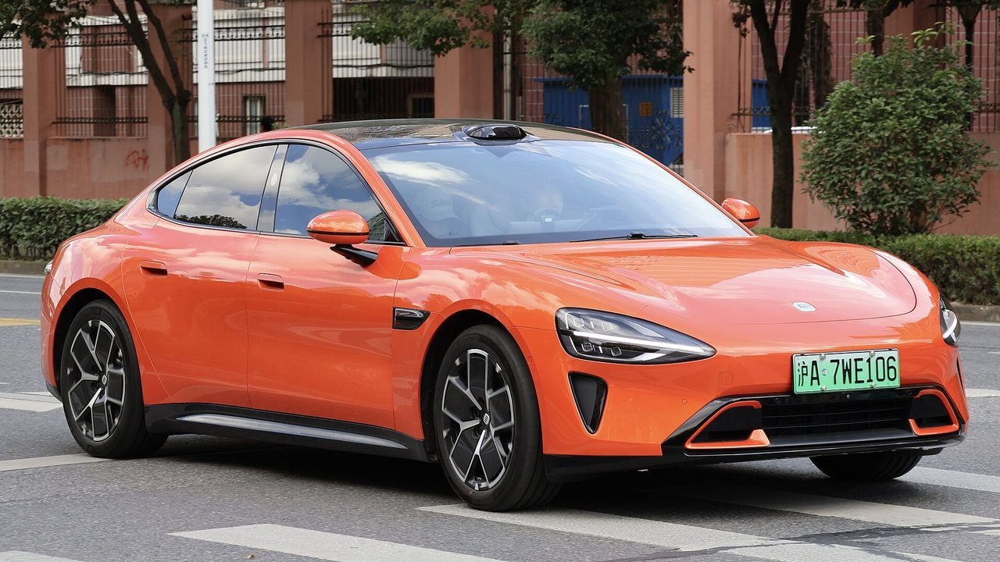

Бампери і крила
Найчастіші позиції після міських ДТП. З кронштейнами і кріпленнями комплектом.
Запчастини з Китаю під замовлення
Перше авто Xiaomi і одразу хіт: в Україні їх уже сотні, а запчастин на ринку практично немає. Возимо напряму від дилерів у Китаї — навіть один кронштейн.
Розборок по SU7 немає, складів немає, а версії Standard, Pro і Max помітно відрізняються: лідар на даху, гальма Brembo у Max, різна аеродинаміка. Задня частина кузова — литий гігакастинг, тому після серйозних ДТП особливо важливо точно знати, які елементи доступні окремо. Усе це звіряємо по VIN у каталогах дилера.

Найчастіші позиції після міських ДТП. З кронштейнами і кріпленнями комплектом.
Наскрізна задня оптика і LED-фари — звіряємо версію і показуємо маркування.
Для Pro/Max привозимо лідар, радари і камери окремими вузлами.
З кріпленнями під камери, у жорсткій упаковці з фотозвітом.
У Max — Brembo з іншими колодками. VIN вирішує, який комплект ваш.
Опишіть симптом своїми словами — менеджер підкаже, яка деталь зазвичай потрібна, і перевірить по VIN.
Рахуємо комплект: бампер, кронштейни, датчики, решітки. Один маршрут — швидше і дешевше.
Звіримо версію оптики по VIN, покажемо фото перед відправкою.
Скло з кріпленнями під камери — привозимо з упаковкою для скла.
Колодки, фільтри, двірники — недорогі позиції, вигідно додати до основного замовлення.
Авіа — від $15,5/кг (від 30 кг — від $11,3/кг), море — від $5,6/кг (від 30 кг — від $2,5/кг). Ціна включає доставку і розмитнення, фіксується до оплати. Точну вартість конкретної деталі менеджер підтверджує після перевірки VIN — до 30 хвилин у робочий час.
Модель, VIN і що потрібно — формою, у Telegram або телефоном.
Звіряємо артикул і комплектацію у каталогах дилера в Китаї.
Авіа чи море, строк і фінальна сума «під ключ» — до оплати.
Фотозвіт перед відправкою, трек-номер і статуси до отримання.
SU7 в Україні — новинка без інфраструктури: ні розборок, ні складів. Ми працюємо напряму з дилерами в Китаї — надішліть VIN і фото, дамо ціну «під ключ» за день.
Так. У Китаї SU7 — масова модель, деталі є у дилерів. Привозимо навіть позиції, яких в Україні ще ніхто не возив.
Ні: гальма, аеродинаміка, датчики і частина оптики різні. Підбираємо строго по VIN.
Авіа — орієнтовно від 14 днів, габаритні елементи можна морем (від 60 днів). Порахуємо обидва варіанти.
Залежить від зони удару: задній гігакастинг ремонтується складніше. Надішліть фото — чесно скажемо, які елементи доступні.